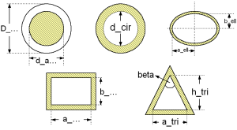

dp = zeta_TOT * (rho/2) * velocity^2
with
| rho | as density of fluid [kg/m3], |
| velocity | as mean velocity [m/s], |
| zeta_TOT | as pressure loss coefficient [-]. |
The pressure loss of these channels is similar to its calculation in straight pipes. There are three different flow regimes observed (laminar,transition,turbulent). The pressure loss coefficient (zeta_TOT) of a channel is calculated in dependence of the flow regime as follows:
zeta_TOT = CF_lam/Re * (L/d_hyd)
with
| CF_lam | as correction factor considering the geometry for laminar regime [-], |
| L | as length of geometry perpendicular to cross sectional area [m], |
| d_hyd | as hydraulic diameter of geometry [m], |
| Re | as Reynolds number [-], |
| zeta_TOT | as pressure loss coefficient [-]. |
Note that the beginning of the laminar regime depends on the chosen surface roughness of the channel and cannot be beneath Re ≤ 1e3.
The Darcy friction factor (lambda_FRI) of a channel with different shapes of its cross sectional area are shown in dependence of the Reynolds number (Re) in the figures below.